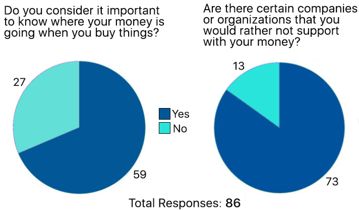

INFOSHOP
iOS App Concept and Design • Timeframe: 2 weeks • Role: Co-Designer
There are about millions of sites and apps that offer things for purchase. But there are very few that help a person know where their money goes when they make a purchase. What and who are they supporting? In an effort to increase consumer and citizen awareness of how buying power is used, I created the concept for Infoshop and created a full design of the application over the course of 2 weeks, working on a team of three.
Partnering
The idea we had to empower consumers through an app was a big one. We did't think that our small team could do it all alone. Which is why we looked for an organization to partner with. We researched a number of NGO's that work on consumer protection and information, education, and advocacy about economics, monoplization, and other related issues.
The idea was to offer this application to an NGO as a project. Our intention is that this application will further the NGO's goals of reaching out to and educating the public, and that the NGO staff and scholars will provide editorial content and analysis to be featured in Infoshop.
We decided we'd love to work with Public Citizen, an organization founded in 1971 with a mission to represent ordinary people in the halls of power. They've been a consistent voice of opposition against monopoly. This project has nothing to do with Public Citizen at this point, as they have not agreed to work with us, but we borrowed their logo in our test design.
Talking to People
Without speaking to potential users of Infoshop, we really couldn't know whether there was interest enough to build it. We might be unique in our interest in the topic. So we set out to interview people, beginning with a screener/research survey that netted 86 responses.
The charts show that the responses in the survey showed overwhelming interest in better tracking what one supports with one's money.
We did in-depth interviews with 7 people. These interviews were the heart of our research. We believe in letting people tell us about their experiences and not leading them or judging. It's important to ask about things that have happened in the past or regularly happen in someone's life, because there's often a gap between what people say they believe and how they really behave.
Key User Quotes
“I go grocery shopping at Stop & Shop and I feel guilty about it every time. They source food from giant factory farms."
"When I buy clothes and stuff I’m way more willing to spend more money to buy clothes that are not made by 8-year-olds in Indonesia"
"You have to know the parent company."
"I feel like community and neighborhood shops really contribute to the economy in a different kind of way."
Narrowing the Focus
We had gathered a lot of stories about peoples' habits and beliefs. We had to consolidate and discuss what they meant. There was a range feelings among the respondents: some people more apathetic, and some strongly interested in supporting companies whose values they believed in. But the trend was toward caring. This told us that even if this product was not for everyone, it could potentially be for many people, and perhaps even most.
But in what way would they care, exactly? And what tools and features would best suit our potential customers' needs?
We sketched to help answer these questions. Below is a storyboard showing a typical user predicament, based on interviews.

Personas
Fictional personas based on our real-life subjects help us to keep in mind the target audience that we'll design for. Below is our persona sheet for our primary user, Jessica, who would be in our thoughts for the rest of the process.
Problem Statement
"Conscious consumers need a quick and easy way to find out about the culture and values of the companies that they support with their business in order to make informed decisions about how to spend their money."
Based on our new focus, we set priorities using the MOSCOW method of determining Must-Haves, Should-Haves, Could-Haves, and Won't-Haves.
The chart below shows that the must-haves were the ability to search for information either by barcode-scanning or by text search (for when no barcode is available), to see information on a company (rather than individual products), and to see quick information on that company, including general ratings for human rights and environmental responsibility.
Design and Iterations
For this iOS app, we worked separately and gradually refined.
One of the first choices we made was the choice of platform: iOS. For barcode scanning, access to the device's camera would be essential. While we would like to design it for Android as well, we decided to start with iOS.
Following Apple's Human Interface Guideline (HIG), we sketched basic designs on paper, each of the three of us drawing separately.
Below are some mid-fidelity designs, consolidating our separate ideas, and designing digitally in Sketch.
After creating each round of design we conducted usability testing, validating our design with users as soon as we could. A usability testing session is pictured below.

Final Designs
The Company Profile page is the central store of information that our users are looking for. It features:
- A general company analysis to be written by researchers at Public Citizen.
- Human Rights and "Green" scores.
- General company information.
- Link to the parent company.
- Articles related to the company or industry.
We feel that with Infoshop in their hands our users will be better empowered to play their roles as consumer and citizen when they make their purchases.